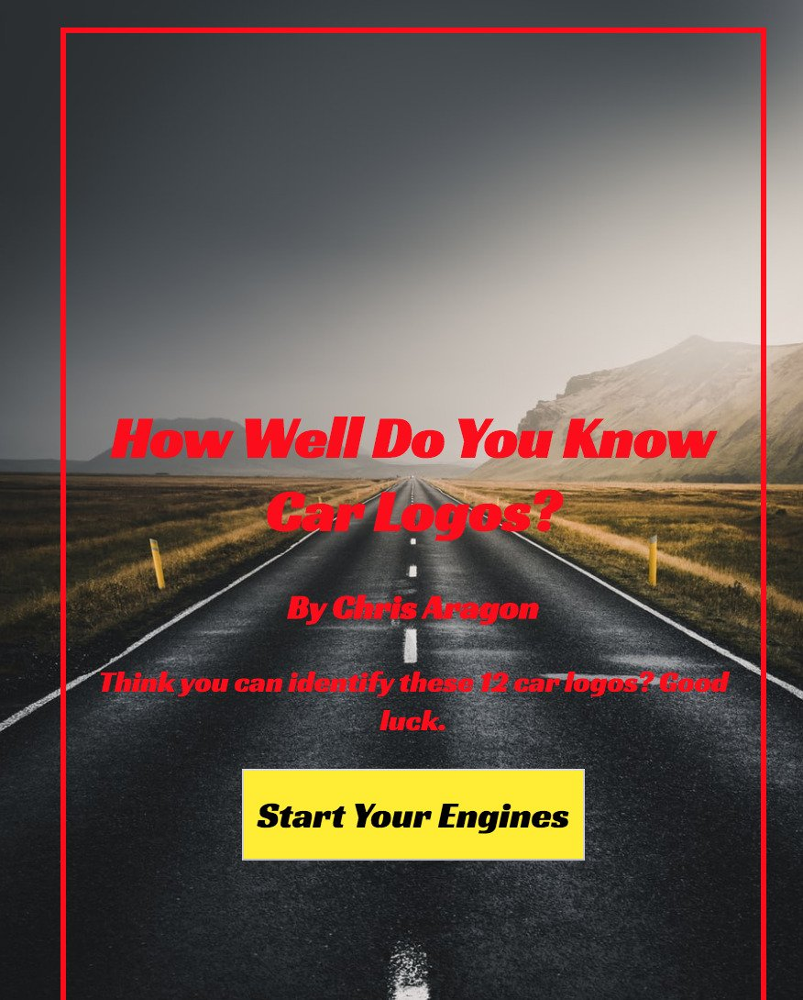
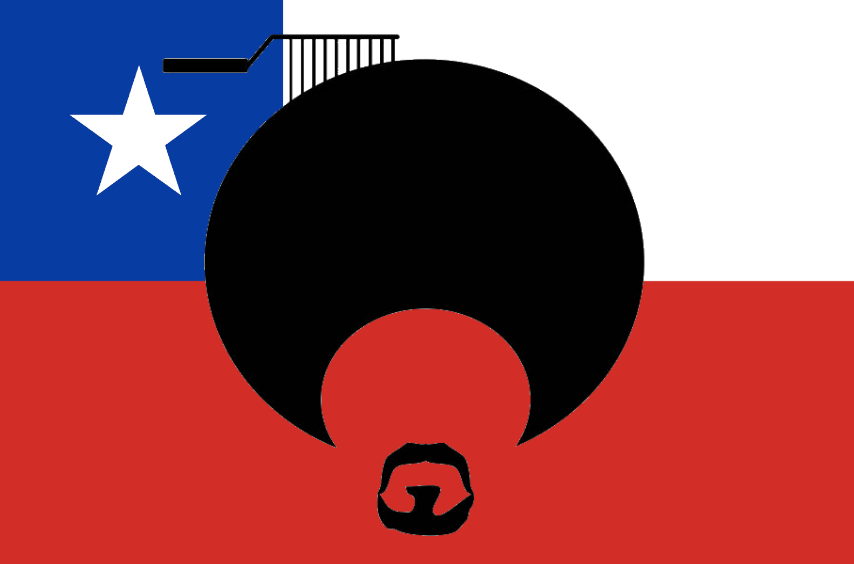
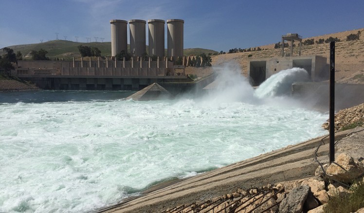
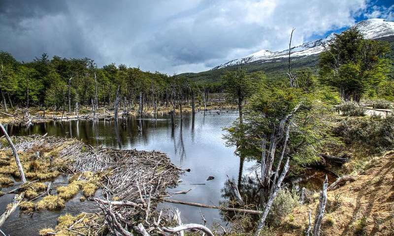

My Life Story
My name is Chris, and I am a full stack web developer. I love coding because of its many fascinating interdisciplinary applications, as it can be applied to any field or discipline to solve many of our problems. I was first exposed to coding after hearing this NPR podcast about how computer science is being used to save elephants, and since I started learning I have never looked back! I love the rewarding feeling of seeing my programs and apps come alive with the code that I write. I’m especially interested in front-end website development and how to visually represent complex concepts or data.
I am a graduate of Tufts University with a double major in Environmental Science and International Relations. Outside of coding, I love hiking, yoga, reading non-fiction (especially books by Bill Bryson and Michael Pollan), baking breads and sweets, and playing guitar (I mostly play classical, but I also love the Grateful Dead and the Beatles).
Portfolio
Car Logo Quiz
This is a quick and fun quiz of how well you know different car logos. I made it myself using javascript, jQuery, html5, and css. Please feel free to view the code here
Independent Writing and Research
In addition to development, I also have years of experience writing and researching a host of topic, especially around international relations, environmental issues, green energy, and public health. Feel free to read and explore my writing.
Afro-Chileno: Haitian Migration in the Western World
The podcast submission my Tufts senior capstone. Researched, written, recorded, edited, and produced by Chris Aragon
The Mosul Dam
The national security and environmental implications of the Iraq's Mosul Dam
The Beaver War (La guerra de los castores)
A study of the invasive beavers of South America. Escrito en español
 |
 |
|---|